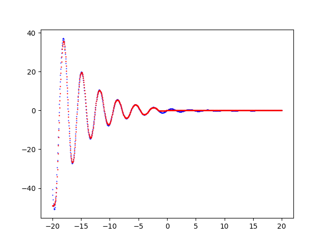

Studies, experiments and examples about deep learning machine models based on different topologies of neural networks: multilayer perceptrons, convolutional and recurrent layers, long-short-term-memory cells. Applications of neural networks to fit mathematical objects, to analyze texts, images, sounds and videos, to search for recurrent patterns in numerical series. Code strictly original written in Python 3 with TensorFlow and/or PyTorch, working and freely available on GitHub.
One variable function fitting with TensorFlow
The fitting of a continuous and limited real-valued function defined in a closed interval of the reals $f(x) \colon [a,b] \to \rm I\!R$ with a neural network
is a classic machine learning problem and it does not require any sophisticated neural network architecture in order to get a fitting with accuracy close to 100%:
it is enough an MLP (Multi-Layer Perceptron) where both the input and output layers contain only one neuron because the dimension of both domain and codomain is 1
and some freedom of choice in hidden layer architecture, their own activation functions, loss function, optimizator and several training parameters.
On Internet you can find several examples of MLPs that fit this kind of functions; however often such examples combine in a single Python script dataset generation (and function to fit usually hardcoded), MLP training,
prediction and result visualization; also the architecture of the neural network is hardcoded and/or is not very parameterizable via command line and finally the activation functions, the used optimizer and the loss function are decided by the author
without any explanation describing the reasons for their choice.
Poor parameterization, the use of hard-coded implemented choices and unification of various functionalities in a single script make experimentation difficult
and they force the experimenter to proceed for code changes in order to implement and test MLP customization and/or training procedure.
Goal of this post and related code, available at GitHub, is to allow the experimenter to implement and test different combinations of MLP architectures, their own activation functions, training algorithm and loss function without writing code but working only on the command line of the four Python scripts which separately implement the following features:
- Dataset generation: generation of a csv file from a function $f(x) \colon [a,b] \to \rm I\!R$ passed as argument (therefore not hardcoded). This phase not mandatory, in fact datasets could be pre-existing (as it happens in the real world, for example by extracting curves from data present in databases or Excel files, from the output of measuring instruments, from data-loggers connected to electronic sensors, etc) and therefore not necessarily be generated in a synthetic way.
- MLP architecture definition + Training: configuration of MLP hidden layer architecture with their own activation functions and training procedure execution on training dataset allowing you to specify your choice of optimization algorithm, loss function and other training parameters.
- Prediction: application of the previously trained model to an input dataset (which should contain data never seen by the model being trained) and generation of an output csv file containing the prediction.
- Visualization of the result: generation of a chart that shows overlapped the initial dataset curve (training or test, as you prefer) and prediction curve and it allows the visual comparison of the two curves. This phase is not mandatory because the prediction is saved in the previous step in a csv file and therefore it is already usable as such.
The exact same mechanism was created using PyTorch technology; see the post One variable function fitting with PyTorch always published on this website.
Dataset generation
Goal of the fx_gen.py Python program
is to generate datasets (both training and test ones) to be used in later phases;
it takes in command line the function to be approximated (in lambda body syntax), the interval of independent variable (begin, end and discretization step)
and it generates the dataset in an output csv file applying the function to the passed interval.
In fact the output csv file has two columns (without header): first column contains the sorted values of independent variable $x$ within the passed interval discretized by discretization step;
second column contains the values of dependent variable, ie the values of function $f(x)$ correspondent to values of $x$ of first column.
To get the program usage you can run this following command:
$ python fx_gen.py --helpusage: fx_gen.py [-h]
-h, --help show this help message and exit
--dsout DS_OUTPUT_FILENAME dataset output file (csv format)
--fx FUNC_X_BODY f(x) body (body lamba format)
--rbegin RANGE_BEGIN begin range (default:-5.0)
--rend RANGE_END end range (default:+5.0)
--rstep RANGE_STEP step range (default: 0.01)An example of using the program fx_gen.py
Suppose you want to approximate the function $$f(x)=\frac{\sin 2x}{e^\frac{x}{5}}$$ in the range $[-20.0,20.0]$. Keeping in mind that np is the alias of NumPy library, the translation of this function in lambda body Python syntax is:
np.sin(2 * x) / np.exp(x / 5)$ python fx_gen.py \
--dsout mytrain.csv \
--fx "np.sin(2 * x) / np.exp(x / 5)" \
--rbegin -20.0 \
--rend 20.0 \
--rstep 0.01$ python fx_gen.py \
--dsout mytest.csv \
--fx "np.sin(2 * x) / np.exp(x / 5)" \
--rbegin -20.0 \
--rend 20.0 \
--rstep 0.0475MLP architecture definition + Training
Goal of the fx_fit.py Python program
is to dynamically create a MLP and perform its training according to the passed parameters through the command line.
To get the program usage you can run this following command:
$ python fx_fit.py --helpusage: fx_fit.py [-h]
--trainds TRAIN_DATASET_FILENAME
--modelout MODEL_PATH
[--epochs EPOCHS]
[--batch_size BATCH_SIZE]
[--learning_rate LEARNING_RATE]
[--hlayers HIDDEN_LAYERS_LAYOUT [HIDDEN_LAYERS_LAYOUT ...]]
[--hactivations ACTIVATION_FUNCTIONS [ACTIVATION_FUNCTIONS ...]]
[--optimizer OPTIMIZER]
[--loss LOSS]An example of using the program fx_fit.py
Suppose you have a training dataset available (for example generated through fx_gen.py program as shown in the previous paragraph)
and you want the MLP to have three hidden layers with respectively with 200, 300 and 200 neurons and that you want to use the sigmoid activation function output from all three layers;
moreover you want to perform 1000 training epochs with a 200 items batch size using the Adamax optimizator algorithm with learning rate equal to 0.02
and loss function equal to MeanSquaredError. To put all this into action, run the following command:
$ python fx_fit.py \
--trainds mytrain.csv \
--modelout mymodel \
--hlayers 200 300 200 \
--hactivation sigmoid sigmoid sigmoid \
--epochs 1000 \
--batch_size 200 \
--optimizer 'Adamax()' \
--learning_rate 0.02 \
--loss 'MeanSquaredError()'mymodel will contain the MLP model trained on mytrain.csv dataset according to the parameters passed on the command line.
Prediction
Goal of the fx_predict.py Python program
is to apply the MLP model generated through fx_fit.py to an input dataset (for example the test dataset generated through fx_gen.py program as shown in a previous paragraph);
the execution of the program produces in output a csv file with two columns (without header): the first column contains the values of indepedent variable $x$ taken from test dataset
and the second column contains the predicted values of dependent variable, ie the values of the prediction correspondent to values of $x$ of first column.
To get the program usage you can run this following command:
$ python fx_predict.py --helpusage: fx_predict.py [-h]
--model MODEL_PATH
--ds DATASET_FILENAME
--predictionout PREDICTION_DATA_FILENAMEAn example of using the program fx_predict.py
Suppose you have the test dataset mytest.csv available (for example generated through fx_gen.py program as shown in a previous paragraph)
and the trained model of MLP in the folder mymodel (generated through fx_fit.py program as shown in the example of previous paragraph); run the following command:
$ python fx_predict.py \
--model mymodel \
--ds mytest.csv \
--predictionout myprediction.csv
myprediction.csv will contain the fitting of the initial function.
Visualization of the result
Goal of the fx_plot.py Python program
is to visualize the prediction curve superimposed on initial dataset curve (test or training, as you prefer) and it allows the visual comparison of the two curves.
To get the program usage you can run this following command:
$ python fx_plot.py --helpusage: fx_plot.py [-h]
--ds DATASET_FILENAME
--prediction PREDICTION_DATA_FILENAME
[--savefig SAVE_FIGURE_FILENAME]An example of using the program fx_plot.py
Having the test dataset mytest.csv available (for example generated through fx_gen.py program as shown in a previous paragraph)
and the prediction csv file (generated through fx_predict.py program as shown in the previous paragraph), to generate the two xy-scatter charts, execute the following command:
$ python fx_plot.py \
--ds mytest.csv \
--prediction myprediction.csvNote: Given the stochastic nature of the training phase, your specific results may vary. Consider running the example a few times.

Chart generated by the program
fx_plot.py that shows the fitting of the function $f(x)=\frac{\sin 2x}{e^\frac{x}{5}}$ made by the MLP.Examples of cascade use of the four programs
In the folder one-variable-function-fitting/examples
there are nine shell scripts that show the use in cascade of the four programs in various combinations of parameters
(MLP architecture, activation functions, optimization algorithm, loss function, training procedure parameters)
To run the nine examples, run the following commands:
$ cd one-variable-function-fitting/examples
$ sh example1.sh
$ sh example2.sh
$ sh example3.sh
$ sh example4.sh
$ sh example5.sh
$ sh example6.sh
$ sh example7.sh
$ sh example8.sh
$ sh example9.shDownload of the complete code
The complete code is available at GitHub.
These materials are distributed under MIT license; feel free to use, share, fork and adapt these materials as you see fit.
Also please feel free to submit pull-requests and bug-reports to this GitHub repository or contact me on my social media channels available on the top right corner of this page.